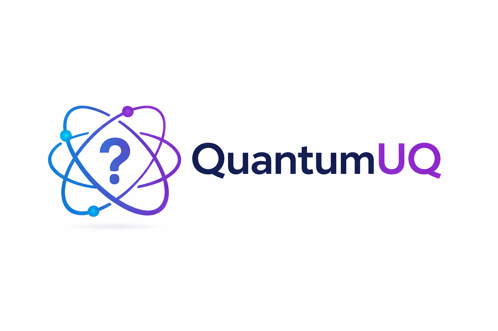
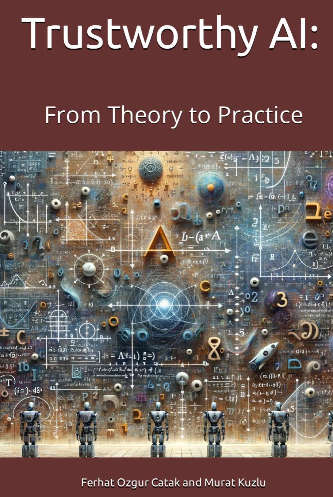

Ferhat Ozgur Catak
Associate Professor of Cyber Security — University of Stavanger (UiS), Norway
Trustworthy AI for Critical Infrastructure
Secure AI • Uncertainty Quantification • Robust Learning • Quantum-Enhanced Security
Research vision
Critical infrastructure—energy, transport, healthcare, communications—increasingly relies on AI. My research focuses on making these systems trustworthy: secure against attacks (adversarial, backdoors, prompt injection), equipped with uncertainty quantification for safe decisions, and capable of privacy-preserving collaboration (federated learning, homomorphic encryption). I work on classical and quantum-enhanced methods to deliver robust, explainable, and deployable AI for high-stakes environments.
The Trustworthy AI Stack
1. Data Integrity — Clean, validated, and attack-resistant data pipelines.
2. Robust Learning — Adversarially robust and backdoor-resistant models.
3. Uncertainty Quantification — Confidence bounds and reliable predictions.
4. Privacy & Secure Collaboration — Federated learning, homomorphic encryption.
5. Monitoring & Adaptation — Continuous assurance and drift detection.
Featured projects

QuantumUQ
Open-source toolkit for uncertainty quantification in quantum machine learning (Qiskit + PennyLane).

Trustworthy AI (Book)
Practical guide to building reliable and secure AI systems.
Secure AI for 6G / Next-Gen Communications
Robust signal intelligence, adversarial resilience, and uncertainty-aware inference for future networks.